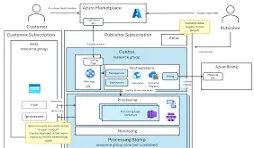

Cloud Infrastructure
Multi-Tenant SaaS Platform
Multi-tenant SaaS on AWS with a dedicated subdomain and isolated database per customer.
Overview
Designed and deployed a scalable multi-tenant SaaS architecture where each customer receives a dedicated subdomain and an isolated database.
Problem
The product needed to onboard many customers on shared infrastructure without compromising data isolation or deployment speed.
Solution
- Wildcard DNS and AWS ALB routing for subdomain-based tenancy
- Per-tenant database isolation
- Docker containerized services
- Redis caching and Celery asynchronous workers
- Dynamic tenant provisioning
- CI/CD for automated deployments
Architecture

Impact
- Scalable multi-tenant architecture
- Automated deployments
- Isolated tenant data